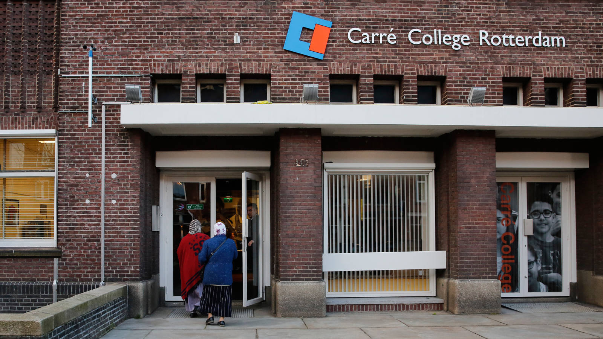
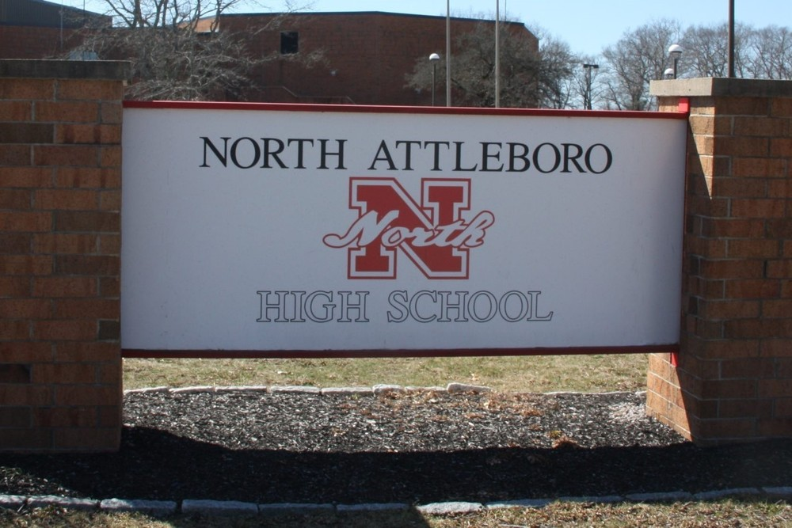

My name is Sheila, I also go by Shey. I like to read books, watch lots of shows and go for long walks when the weather is warm. I take my two dogs with me everytime I go somewhere because they like to join me. I finished highschool in 2016, and took a year off. In 2017 I went to CCRI in Lincoln, did two years there and kept changing my major. I started with Dental Hygienist and switched to X-Ray on the second year. Right before covid, I finished all my pre-requisites and applied for the program itself. Covid hit at the end of 2019 and beginning of 2020, where the school had to shutdown and that is where I stopped going and took a long break. After a couple of years my sister told me about NEIT and so far I like it.
I did highschool in The Netherlands and after I finished highschool in the US. I Graduated in 2016 from North Attleboro Highschool. Then right after I decided to go to CCRI in Lincoln to pursue another diploma. After covid I took a long break and decided to go try out NEIT, where I am currently doing my schooling.
Carre College
North Attleboro High School
New England Institute of Technology (NEIT)
My hobbies are currently watching lots of movies and shows. I try to mix it up and not just only watch shows but also movies once in a while. Besides that I like to take long walks in the park with my two dogs Milo And Simon. I also like to cook food when I have time, and try out new recipes that I never made before.